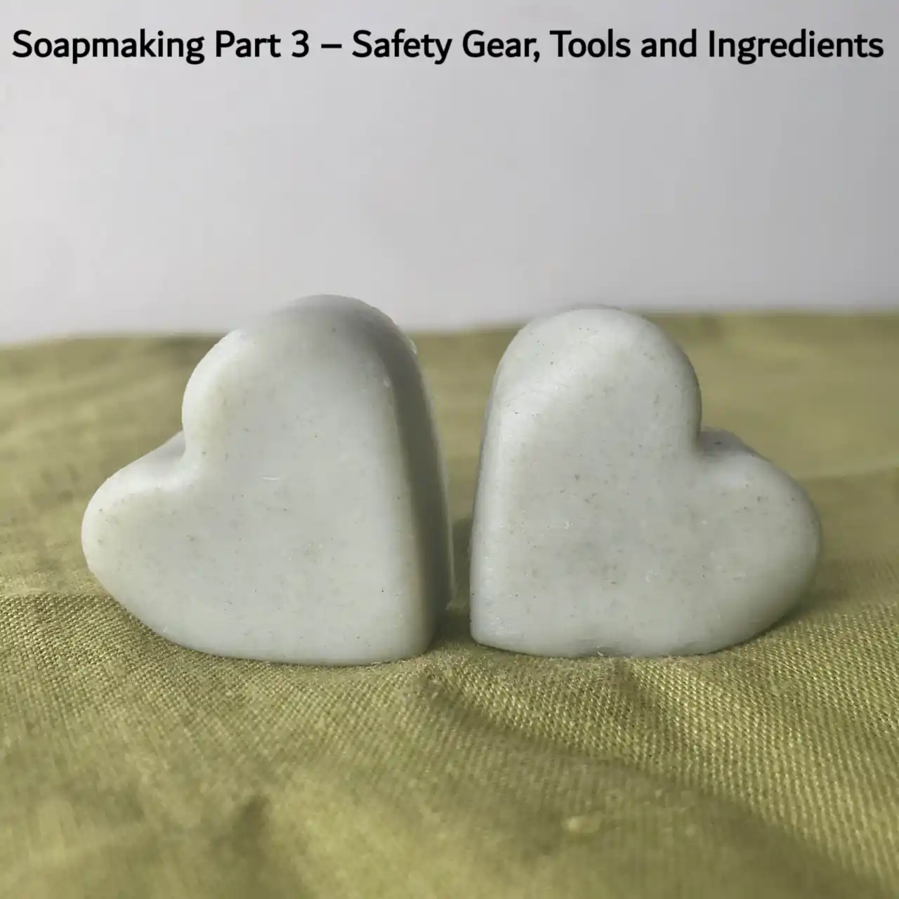

Safety Gear, Tools and Ingredients | Part 3: Learn How to Make Natural Soap!

Welcome to Part 3 of this soapmaking series, here we will provide a list of necessary equipment and ingredients to have on hand when making cold process soap.
Safety Gear (VERY IMPORTANT!)
- safety glasses
- rubber gloves
- long sleeves and trousers & closed toe shoes
- safety mask
Read about lye safety
To avoid cross-contamination, please dedicate all tools for only to make soap, do not mix them with eating utensils and kitchen tools!
Tools
lyse-safe containers
Lye may melt/shatter or react badly with some materials. For example, lye’s fluctuation in temperature may shatter glass containers; it will react with aluminium containers to give of toxic fumes. (read more about lye storage)
Please only use the following materials to handle lye:
- stainless steel
-
polypropylene plastic (recycling no. 5)

-
high-density polyethylene plastic (recycling no. 2)

containers for other ingredients
- glass container for essential oils as they are powerful enough to brake down plastic
stirring utensils
(*nothing wooden as lye eats it up and leaves splinters in your soap)
- silicone spatula
mixing tools
- stick blender (preferably stainless steel) is recommended for quickly achieving emulsion and trace
- whisk (for mixing additives and for traditional hand-stirred soap)
measuring tools
- digital scale (with 0.01g precision for lye)
- measuring spoons
soap moulds
- silicone
- wooden mould with liner
- use your imagination! (soymilk carton, pvc pipe, pringles can etc.)
Soap Ingredients
NaOH – sodium hydroxide
Make sure you know its purity, preferably 99%.
oil(s) and/or butters
Read about choosing oils and butters for soap recipes.
water
Never use hot water! (read about hard/soft water)
optional additives
- chelators (citric acid)
- colourants (clays, natural mica, infused oil)
- fragrances (essential oils)
- others (spices, clays, dried plants; use your imagination!)
We do not recommend artificial additives (fragrance oils, artificial dyes etc.)
To learn how to calculate the amount of ingredients needed in a soap recipe, see our guide on creating your own recipes.
Thank you for reading!